Сдаточная папка
Сдаточная папка — это комплект документов, состоящий из исходно-разрешительной документации, актов освидетельствования скрытых и ответственных конструкций, актов приемки выполненных работ и документов, необходимых для получения ввода объекта в эксплуатацию.
Основная цель сдаточной папки — получение заключения о соответствии (ЗОС). Без полного комплекта получить ЗОС практически невозможно, несмотря на то что перечень документов не утвержден нормативно-правовым актом. Список сформировался на основе опыта инспекторов ГСН и периодически в него добавляют или исключают пункты. После выдачи ЗОС он служит инспектору ГСН содержанием для томов контрольно-надзорного дела объекта и последующего архивирования.
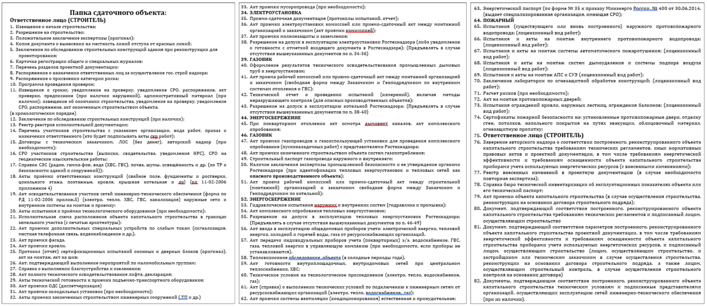
Список документов сдаточной папки отличается по регионам, с учетом местных особенностей. Рассмотрим на примере Ульяновской области — ее делят на 3 блока.
1. Блок документов ГСН
Содержит документы, связанные с проверками ГСН: все виды извещений, решения о проведении проверок, уведомления, программы проверок, акты проверок, предписания, информационные письма, договоры подряда. Формирует инспектор ГСН в процессе надзора до выдачи ЗОС.
2. Блок исходно-разрешительных и разрешительных документов
Включает документы по проектированию объекта, технические условия на подключение к инженерным сетям и справки об их выполнении (работа с РСО), обследования конструкций (заказ у специализированной организации при необходимости), справки СЭС (качество воды, замеры шума, освещенности — заказ у лаборатории), протоколы испытаний (электроизмерения, ограждения кровли/лоджий, пожарная сигнализация, гидранты, системы дымоудаления — заказ или по договору подряда).
Временные и постоянные допуски Ростехнадзора (затратная по времени процедура; без них — нет справок от РСО). Акты пломбировки общедомовых приборов учета (с РСО). Тепловизионное обследование и энергетический паспорт (заказ у организации с допуском). Исполнительная съемка объекта (геодезическая организация, с благоустройством). Техплан БТИ (для постановки на кадастр).
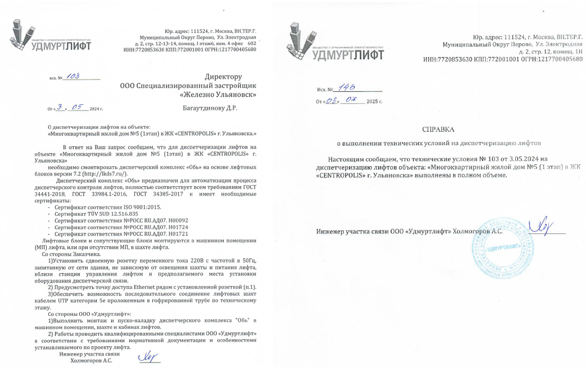
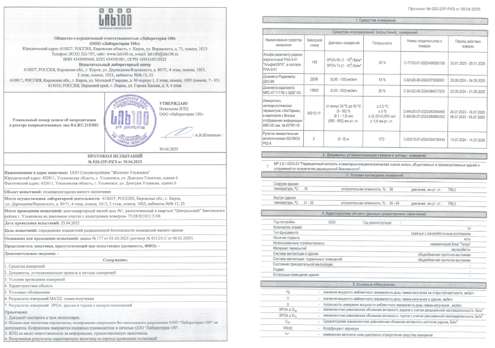
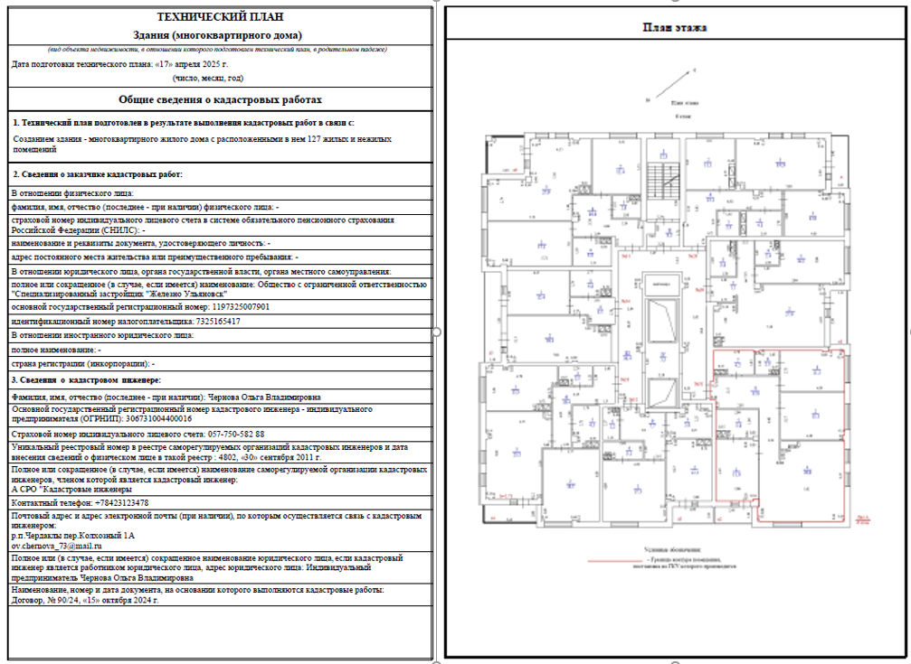
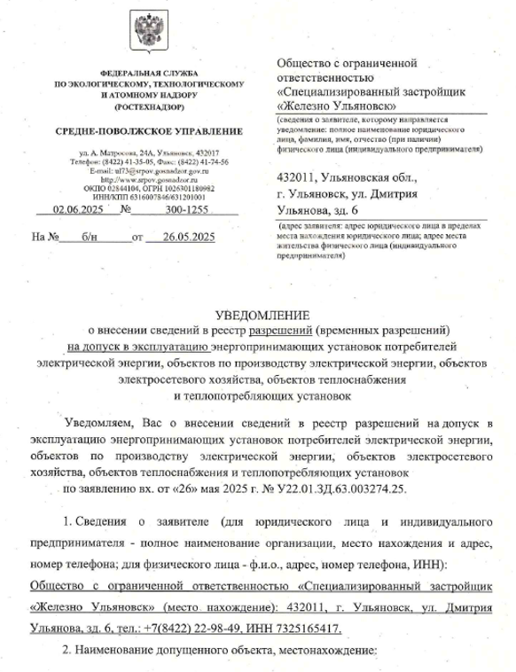
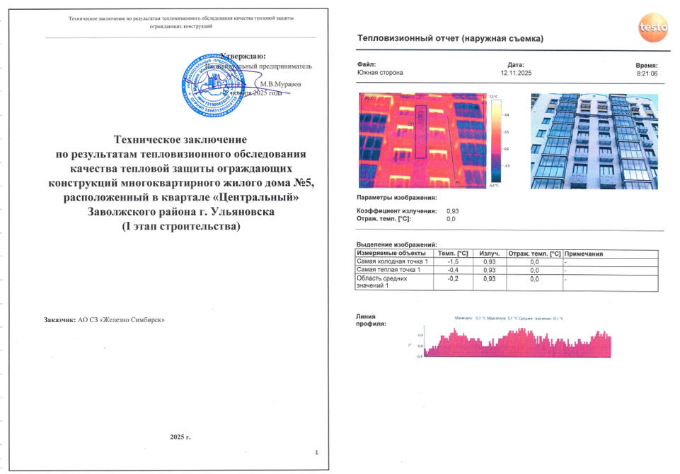
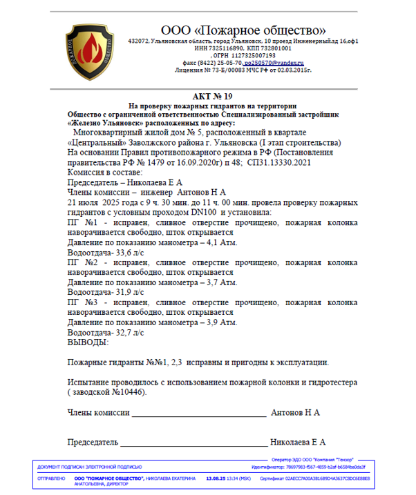
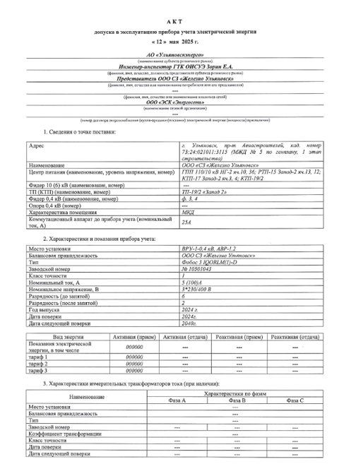
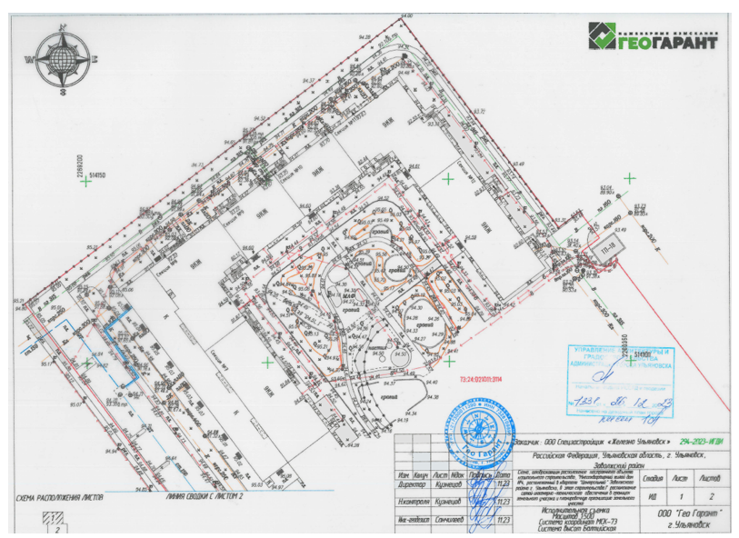
3. Блок исполнительная документация
Самый объемный (может занимать >½ папки). Включает акты освидетельствования скрытых работ, ответственных конструкций, инженерных сетей; приемочные акты по водоснабжению, электроснабжению, газу, вентиляции; исполнительные схемы. Формируют подрядчики по видам работ.
Испытания оконных конструкций (подрядчик по монтажу), сертификаты пожарной безопасности (от поставщиков материалов). Акты соответствия ТУ, техрегламентам и ПД (застройщик). Реестр подрядных организаций и исполнительной документации, справки ГИПа (реестр изменений в проекте стадии П).
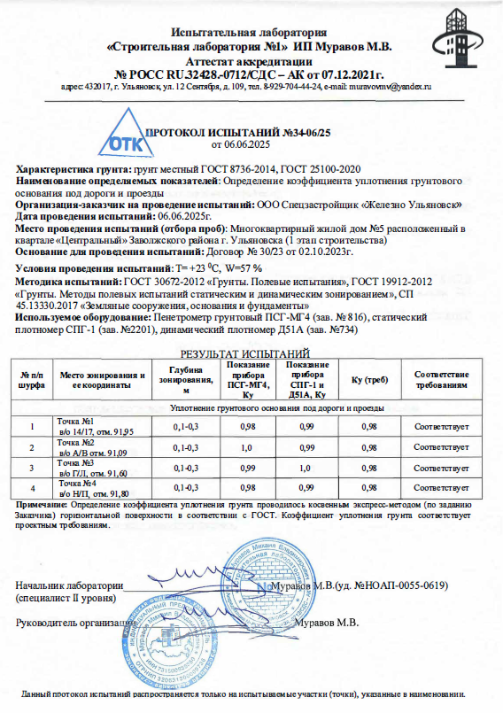
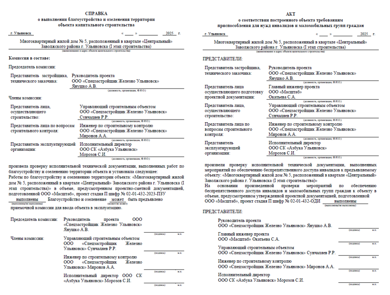
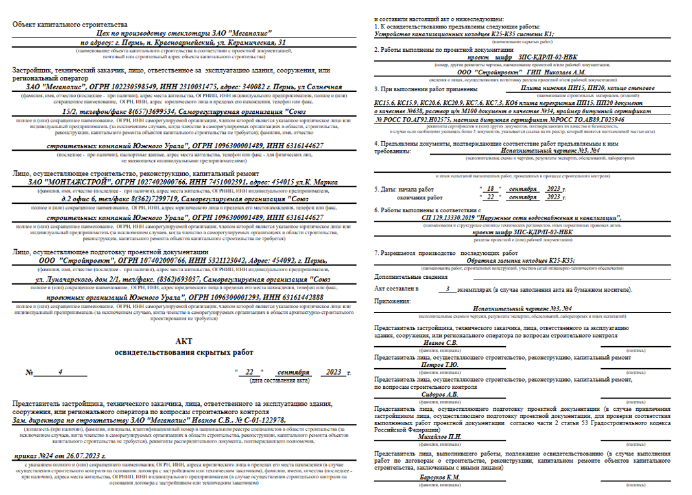
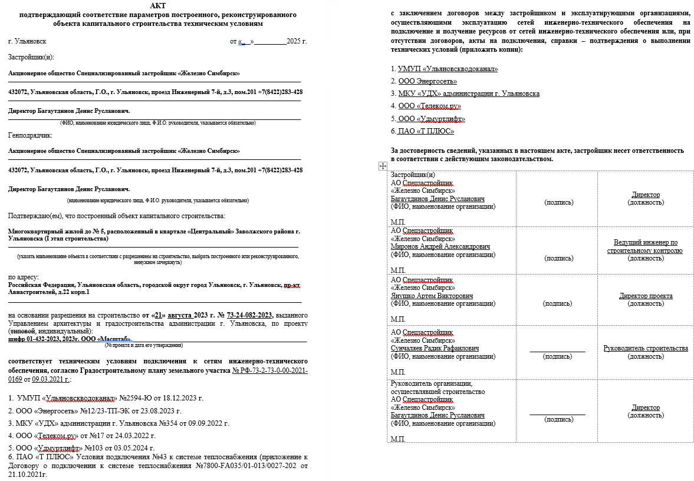
Документы прикладывают заверенными копиями или оригиналами (если в нескольких экземплярах).
Для сведения: поскольку перечень не утвержден законодательно, инспектор может затребовать сверх него документы, например протоколы лабораторных испытаний бетона, кирпича или раствора за весь период строительства.
Объем сдаточной папки может достигать 2–3 томов по 250 страниц (это блоки 2 и 3; блок 1 формирует инспектор ГСН самостоятельно).
Сдаточная папка готова — ее сдают ответственному инспектору ГСН на проверку. Если все документы приложены и пожелания удовлетворены, итоговая проверка (при отсутствии нарушений) закрывается положительно, без препятствий для выдачи ЗОС.